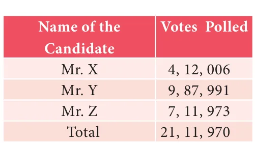
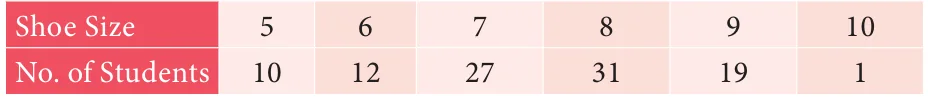
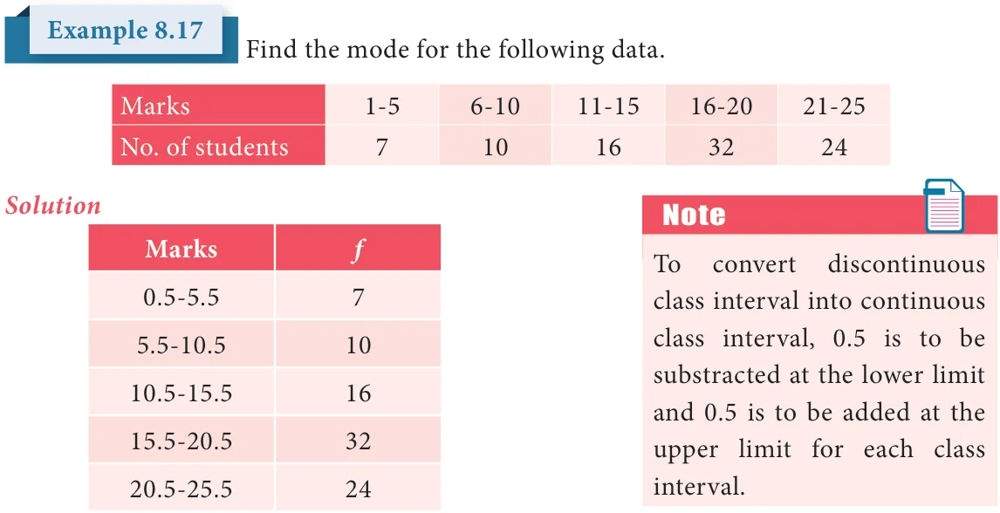
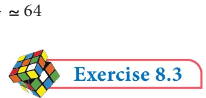

The votes obtained by three candidates in an election are as follows:

Who will be declared as the winner? Mr. Y will be the winner, because the number of votes secured by him is the highest among all the three candidates. Of course, the votes of Mr. Y do not represent the majority population (because there are more votes against him). However, he is declared winner because the mode of selection here depends on the highest among the candidates.
- An Organisation wants to donate sports shoes of same size to
maximum number of students of class IX in a School. The distribution of students with different shoe sizes is given below.

If it places order, shoes of only one size with the manufacturer, which size of the shoes will the organization prefer? In the above two cases, we observe that mean or median does not fit into the situation. We need another type of average, namely the Mode.
The mode is the number that occurs most frequently in the data.
When you search for some good video about Averages on You Tube, you look to watch the one with maximum views. Here you use the idea of a mode.
8.6.1 Mode - Raw Data
For an individual data mode is the value of the variable which occurs most frequently.
In a rice mill, seven labours are receiving the daily wages of ₹500, ₹600, ₹600, ₹800, ₹800, ₹800 and ₹1000, find the modal wage.
Solution
In the given data ₹800 occurs thrice.Hence the mode is ₹800.

Find the mode for the set of values 17, 18, 20, 20, 21, 21, 22, 22.
Solution
In this example, three values 20, 21, 22 occur two times each. There are three modes for the given data!
Note
- A distribution having only one mode is called unimodal.
- A distribution having two modes is called bimodal.
- A distribution having three modes is called trimodal.
- A distribution having more than three modes is called multimodal.
8.6.2 Mode for Ungrouped Frequency Distribution
In a ungrouped frequency distribution, the value of the item having maximum frequency is taken as the mode.
A set of numbers consists of five 4's, four 5's, nine 6's,and six 9's. What is the mode.
Solution

6 has the maximum frequency 9. Therefore 6 is the mode.
8.6.3 Mode - Grouped Frequency Distribution:
In case of a grouped frequency distribution, the exact values of the variables are not known and as such it is very difficult to locate mode accurately. In such cases, if the class intervals are of equal width, an appropriate value of the mode may be determined by
\(\text{Mode} = l + \frac{f - f_1}{2f - f_1 - f_2} \times c\)
The class interval with maximum frequency is called the modal class.
Where \(l\) = lower limit of the modal class; \(f\) = frequency of the modal class; \(f_1\) = frequency of the class just preceding the modal class; \(f_2\) = frequency of the class succeeding the modal class; \(c\) = width of the class interval.

Modal class is 16 -20 since it has the maximum frequency.
\(l = 15.5\), \(f = 32\), \(f_1 = 16\), \(f_2 = 24\), \(c = 20.5 - 15.5 = 5\)
\(\text{Mode} = l + \frac{f - f_1}{2f - f_1 - f_2} \times c\)
\(= 15.5 + \frac{32 - 16}{64 - 16 - 24} \times 5 = 15.5 + \frac{16}{24} \times 5 = 15.5 + 3.33 = 18.83\)
8.6.4 An Empirical Relationship between Mean, Medan and Mode
We have seen that there is an approximate relation that holds among the three averages discussed earlier, when the frequencies are nearly symmetrically distributed.
\(\text{Mode} \approx 3 \times \text{Median} - 2 \times \text{Mean}\)

In a distribution, the mean and mode are 66 and 60 respectively. Calculate the median.
Solution
Given, Mean \(= 66\) and Mode \(= 60\).
Using, Mode \(\approx\) 3 Median \(-\) 2 Mean
\(60 = 3 \times \text{Median} - 2(66)\)
\(3 \times \text{Median} = 60 + 132 = 192\)
Therefore, Median \(= \frac{192}{3} = 64\)

- The monthly salary of 10 employees in a factory are given below : ₹5000, ₹7000, ₹5000, ₹7000, ₹8000, ₹7000, ₹7000, ₹8000, ₹7000, ₹5000 Find the mean, median and mode.
- Find the mode of the given data : 3.1, 3.2, 3.3, 2.1, 1.3, 3.3, 3.1
- For the data 11, 15, 17, x+1, 19, \(x - 2\), 3 if the mean is 14 , find the value of x. Also find the mode of the data.
- The demand of track suit of different sizes as obtained by a survey is given below:

Which size is in greater demanded?
- Find the mode of the following data:

- Find the mode of the following distribution: